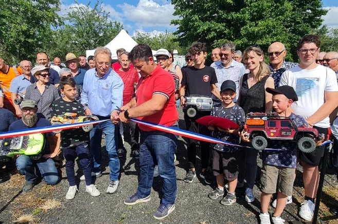

Le Modélisme Chapellois est une association regroupant des passionnés de buggy électrique, crawler, drone FPV, indoor et modélisme en général. Nous proposons des pistes adaptées, des ateliers techniques, des événements conviviaux et un accompagnement pour tous les niveaux, du débutant au pilote confirmé.
Le club se réunit en principe au moins une fois par semaine d'avril à fin octobre sur le terrain de la grange miton, ainsi que certains samedis ou dimanches pour des événements ou pour l’entretien du terrain.
Entre novembre et mars, nous disposons de la salle des fêtes environ tous les 15 jours (hors vacances scolaires). Cette salle est équipée d’une moquette pour le buggy ainsi que d’un terrain Mini‑Z, permettant de rouler en indoor dans d’excellentes conditions.
Sur notre terrain extérieur, nous mettons à disposition un chargeur multi‑sorties permettant de charger jusqu’à 4 batteries LiPo simultanément, avec toutes les connectiques nécessaires. Nous disposons également d’un ensemble d’outils pour les réglages et réparations, ainsi que d’un compresseur pour nettoyer les voitures après les sessions.
Né de l’initiative de trois passionnés de La Chapelle, le club a été inauguré par le maire le 3 juin 2022.
